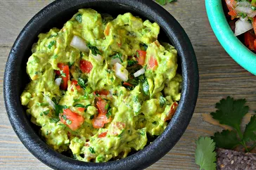

Guacamole

Description
Guacamole is an avocado-based dip or spread that originated in Mexico.
It's typically made with mashed avocado and lime juice, then seasoned with salt and cilantro.
Guacamole often contains tomatoes and onions.
Ingredients
- Avocados: 3 avocados - peeled, pitted, and mashed
- Lime: 1 lime, juiced
- Salt: 1 teaspoon salt
- Roma Tomatoes: 2 roma (plum) tomatoes, diced
- Onion: ½ cup diced onion
- Cilantro: 3 tablespoons chopped fresh cilantro
- Garlic: 1 teaspoon minced garlic
- Cayenne Pepper (Optional): 1 pinch ground cayenne pepper
Steps
- Preheat the oven to 400 degrees F (200 degrees C).
- Stir chicken, cream cheese, hot pepper sauce, 1/2 cup pepper Jack, blue cheese dressing, blue cheese, seafood seasoning together in a large bowl until well combined.
- Transfer to a 9-inch round baking dish and smooth into an even layer. Sprinkle 2 tablespoons pepper Jack over top.
- Bake in the preheated oven until lightly browned on top, 15 to 20 minutes. Remove from the oven, add another pinch cayenne pepper, and sprinkle green onions over top.